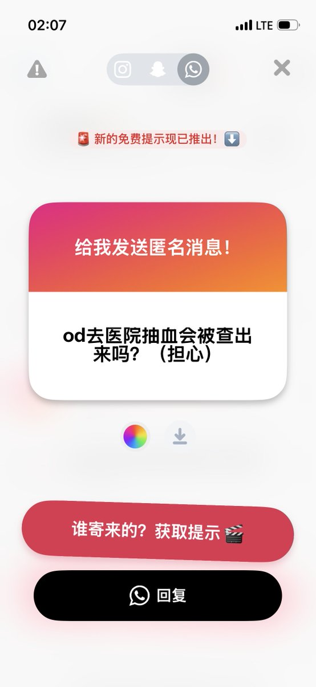
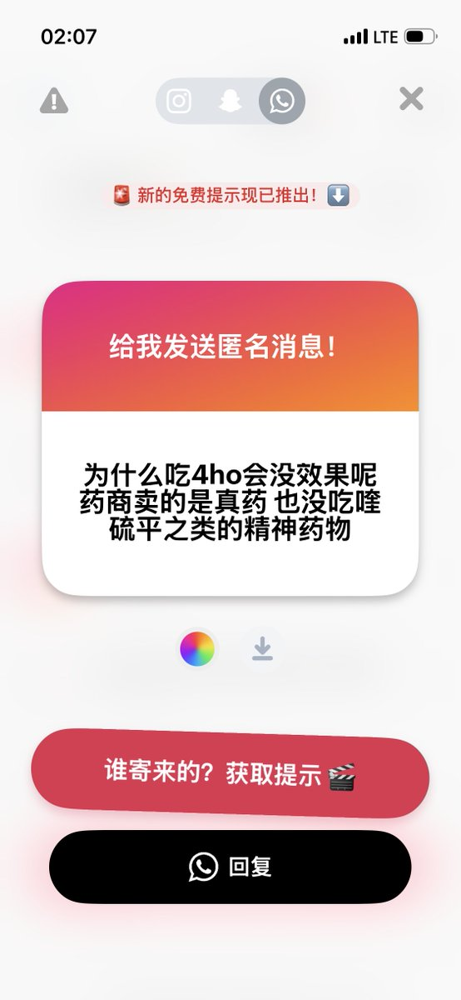

菲菲mian
@Feifeimian8964
@xx1012000456 我当天od下午去医院被查出来了药物反应


x-square「公子」様
@xx1012000456
最近的提问好少，可能是因为账号不稳定+一直被msk追着删推😭😭😭
1.大概率不会，我曾经前一天od第二天测大生化，指标看不出一点异样。抽血没有特异化标志od的项，只能通过转氨酶/肌酐/等几个指标推定肝/肾损伤。其实od的伤害比酒精要小很多哦😇
2.没药效是永恒的困惑，可能是体重/自身代谢，下次加量吧 https://t.co/Bzt48jswgu